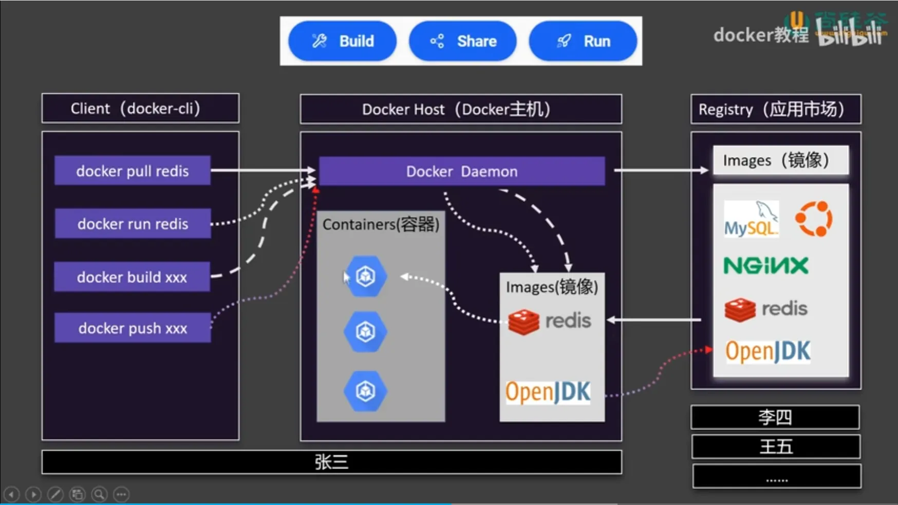

Docker Basics and Application Deployment Guide¶
Overview¶
Note
This guide assumes a basic understanding of Docker and assumes you have Docker Desktop installed on your Windows machine.
Abstract
Docker is a containerization platform that enables developers to package applications and their dependencies into isolated environments called containers. These containers are lightweight, portable, and consistent across development, staging, and production environments.
Docker Desktop Link: https://www.docker.com/products/docker-desktop
 Figure: Comparison between Docker Containers and Virtual Machines
This document provides a comprehensive guide to Docker fundamentals and walks through the process of deploying a Python-based Dash data visualization application using Docker on a local Windows environment.
Core Concepts¶
- Image: A static snapshot that contains all the files, environment variables, and configuration needed to run an application.
- Container: A running instance of a Docker image.
- Dockerfile: A script containing a set of instructions to assemble a Docker image.
- Volume: A mechanism for persistent data storage used by containers.
- Docker Hub: The default public registry for sharing Docker images.
Essential Docker Commands¶
System Info and Help¶
Image Management¶
Container Lifecycle¶
Tip
Always stop containers before removing them to avoid data loss.
Utilities¶
Example: Deploying a Dash App Using Docker¶
Example
This section demonstrates how to containerize and run a Dash data visualization application.
Directory Structure¶
app.py¶
requirements.txt¶
Dockerfile¶
Build and Run Workflow¶
Step 1: Build the Docker Image¶
Step 2: Run the Container¶
--namegives the container a human-readable name-pmaps port 8050 of the container to the host--restart=alwaysensures the container restarts on reboot
Step 3: Verify Application Availability¶
Open a browser and navigate to:
You should see the Dash UI indicating successful deployment.
Best Practices¶
- Use
.dockerignoreto exclude unnecessary files from your image build context - Pin versions in
requirements.txtto ensure deterministic builds - Use tagged images (e.g.,
myapp:1.0) for version tracking - Clean up unused images and containers using
docker system prune - Use Docker Compose for multi-container applications
Summary¶
Docker is a powerful and versatile tool that simplifies application deployment by encapsulating runtime environments. By following the practices outlined in this guide, developers can reliably package and deploy Dash or any other web application across systems with consistent behavior and minimal configuration.